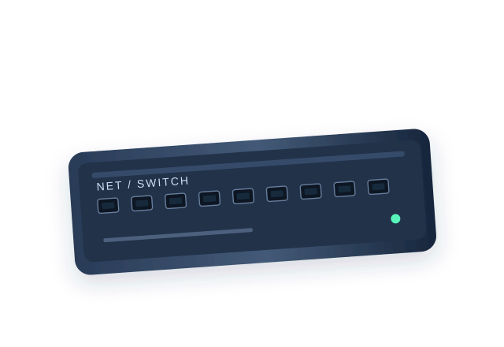

INFRAESTRUCTURA QUE IMPULSA
Todo empieza
por una conexión.
Hay tecnología que se ve. Y tecnología que hace posible todo lo demás. Diseñamos, suministramos y mantenemos la segunda.
01 / NUESTRA VISIÓN
Lo esencial no siempre es visible.
Detrás de cada empresa conectada hay una infraestructura diseñada para no fallar. Nos ocupamos de que cada componente encuentre su lugar y funcione como parte de un todo.
Conoce nuestra filosofía02 / REDES Y CONECTIVIDAD
Cada puerto.
Cada posibilidad.
Switches gestionables, routers y puntos de acceso concebidos para redes organizadas, escalables y preparadas para crecer.
Explorar equipos de red
SWITCH GESTIONABLE / 24 PUERTOS03 / INFRAESTRUCTURA
El orden detrás de la potencia.
Armarios rack, servidores, almacenamiento y cableado estructurado. La base física de un entorno digital sólido.
Ver infraestructura04 / MÁS ALLÁ DEL EQUIPO
De la idea a la implementación.
El mejor hardware necesita un buen plan. Convertimos componentes individuales en sistemas que trabajan juntos.
05 / HARDWARE PROFESIONAL
Diseñado para cada desafío.
06 / EMPEZAMOS CUANDO QUIERAS
El siguiente proyecto empieza aquí.
Cuéntanos qué necesitas. Te ayudaremos a encontrar un punto de partida para tu infraestructura.
Solicitar información